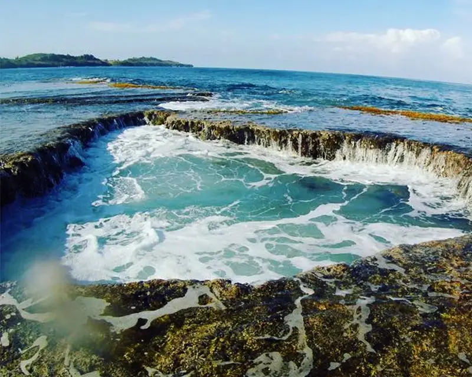

Cabongaoan Beach is a scenic coastal destination located in Burgos, Pangasinan, Philippines. It is best known for its fine golden sand, turquoise waters, and the nearby natural tidal pool known as the Death Pool, which adds a unique geological attraction. Its relative remoteness and unspoiled environment have made it a favored spot for quiet seaside retreats and photography.
Geography and Features
Situated along the western coast of Burgos, Pangasinan, Cabongaoan Beach faces the West Philippine Sea with a shoreline marked by rocky outcrops and sandy patches. The beach is known for its rugged natural scenery, where waves crash against limestone formations and tide pools form in the intertidal zones.
One of the most distinctive features is the Death Pool, also called the Depth Pool, a deep tidal depression carved into the rocks by persistent ocean action over centuries. This natural pool fills and drains with the tide, creating dramatic water movement and a unique swimming spot during low tide.
The surrounding rock platforms and cliffs offer sweeping views of the open sea, making Cabongaoan a memorable example of nature's coastal sculpting.

Tourism and Activities
Visitors come to Cabongaoan Beach for both relaxation and adventure. The relatively calm waters near the shore are suitable for swimming and casual snorkeling, while the dramatic rock formations attract photographers and sightseers.
Exploring the Death Pool is one of the area's biggest draws. During low tide, visitors may wade or swim in this natural basin while others enjoy watching the ocean surge in and out of the rock openings.
Around the beach, simple huts and homestays provide basic accommodation, and locals may arrange boat rides or guided walks to nearby scenic viewpoints and coastal sections.
Accessibility and Conservation
Reaching Cabongaoan Beach usually involves a drive through rural Pangasinan towns and coastal roads from Alaminos or Bolinao. Although some road segments may be rough or unpaved, improvements in access have made the beach easier to reach by private vehicle or local transport.
Visitors should plan ahead and bring essentials, as amenities near the beach remain limited. Local communities and authorities also encourage responsible tourism, including proper waste disposal and respect for marine and coastal habitats.
The area's relatively undeveloped setting supports sustainable travel practices and helps preserve Cabongaoan's natural beauty and ecological integrity.